Вітальня · журнал «ДентАрт» 2025 №1
Доктор Діана Ункуца: «Золотий вік стоматології настав!»
GUEST ROOM — DR. DIANA UNCUȚA
У Вітальні «ДентАрту» сьогодні – доцент Діана Ункуца, завідувачка кафедри стоматологічної пропедевтики Кишинівського державного університету медицини та фармації імені Ніколає Тестеміцану. Її знають як талановиту викладачку, успішну фахівчиню не лише в Республіці Молдові, а й в інших країнах – завдяки багатьом міжнародним проєктам, у яких вона брала і бере участь. А головне, завдяки сотням вдячних учнів, яких вона навчила невтомно йти до вершин нелегкої і благословенної професії стоматолога…
Хотілося змінювати на краще життя людей...
– Доброго вечора, Діано! Напевно, не варто ставити Вам наше традиційне запитання про вибір професії з огляду на професійну популярність Вашої мами Олександри Іванівни Баранюк… Але все ж таки, чи були у Вас варіанти у виборі професії?
– Звісно, варіанти були. Але саме мати вселила в мене бажання стати стоматологом! Вона була дуже турботливою, брала мене до себе на роботу, і те, що я бачила в дитячі роки, здавалося мені дуже цікавим. Я подумала, що теж стану стоматологом, бо це дуже благородна й цікава професія. Стоматологи дарують усмішки людям, дарують добро. Вони змінюють на краще життя людей – і дітей, і дорослих, і літніх… Напевно, це і спонукало мене стати стоматологом. Мені теж хотілося змінювати на краще життя людей…
Я хочу висловити повагу й подяку моїй матері, Олександрі Баранюк, викладачці університету з 50-річним стажем, яку я дуже люблю і якою захоплююсь! Разом ми ділили радощі життя, іноді важкі моменти, але вона підтримувала мене завжди. До речі, життя моєї мами і родини тісно пов'язане з Україною…
Мама закінчила Одеський медінститут і добре пам'ятає професора Олексія Івановича Марченка – видатного спеціаліста з терапевтичної стоматології, його дружину Галину Миколаївну, хірурга-стоматолога, і всіх викладачів, котрі у 60-х роках минулого століття навчили, виховали не лише її, а ціле золоте покоління стоматологів, як лікарів, так і викладачів. Вони видали книгу «Лікарські рослини у стоматології» (О. Марченко, О. Баранюк, О. Левицька, О. Соколовська, 1989).
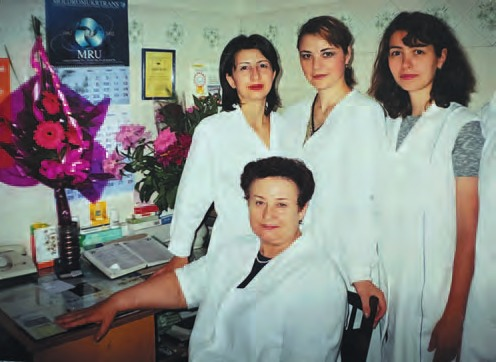
Ми дуже вдячні за ту освіту, яку багато наших лікарів здобули у Києві, Харкові, Одесі!
Мама народилася 3 квітня 1942 року в селі Софія у Молдові. Вступила на стоматологічний факультет Державного медичного інституту в Кишиневі у 1958 році, але її направили в Україну, у Медичний інститут імені Миколи Пирогова в Одесі, який вона закінчила у 1963 році. Після закінчення протягом року навчалася у клінічній ординатурі на кафедрі терапевтичної стоматології того ж інституту. 1964 року почала працювати асистентом на кафедрі терапевтичної стоматології Медичного інституту в Кишиневі. 1974 року успішно захистила кандидатську дисертацію.
Я хотіла б згадати і мого дорогого батька Бориса Баранюка. Він був доброю, сердечною, скромною людиною. З дитинства говорив одночасно двома мовами – румунською і українською, бо народився у молдавсько-українському селі Стурзівка у сім'ї, де було 11 дітей. Викладав німецьку мову в Академії наук і Технічному університеті Молдови, захистив кандидатську дисертацію...
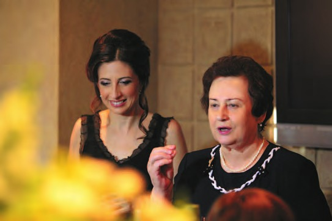
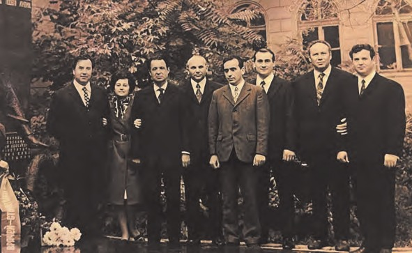
Пацієнтам завжди краще лікуватися вдома
– Стоматологія Молдови й України у своєму розвитку крокували паралельно і зі здобуттям незалежності нашими країнами відкрилися для світової стоматології… Як Ви оцінюєте рівень молдавської стоматології порівняно з європейською, американською? Де пацієнтам краще?
– Напевно, всі мої колеги-стоматологи погодяться, що останні 20 років стоматологія у Молдові, як і в Україні, розвивалася дуже бурхливо. І я пишаюся нашими стоматологами, які насправді досягли дуже високого рівня у щелепно-лицевій хірургії, імплантології, ортопедичній, терапевтичній стоматології, ортодонтії, дитячій стоматології, ендодонтії, пародонтології… Кафедри удосконалення лікарів теж ідуть у ногу з часом. Дуже багато цікавих курсів є на всіх наших базах та кафедрах. І цифрова стоматологія теж дуже сильно розвивається разом з іншими удосконаленнями в галузі стоматології.
А пацієнтам завжди краще лікуватися вдома. Завжди можна порозумітися з лікарем, порадитися, щоб склався ефективний план лікування.
У нас у Молдові дуже багато пацієнтів з європейських країн, Америки, тому що у нас висока якість стоматології та більш прийнятні ціни порівняно, наприклад, з Німеччиною, Францією, де якість теж висока, але й висока ціна стоматологічних послуг.
– Тобто у Молдові процвітає медичний стоматологічний туризм?
– Так! І це не лише лікування пацієнтів, але й спілкування людей з-за кордону із нашими громадянами. Окрім високоякісної стоматологічної допомоги, вони також можуть побачити нашу країну, її історичні місця, пам'ятники, у нас дуже смачна кухня, тобто це поєднання корисного і приємного…
Студенти всіх часів у чомусь схожі, але є й різниця
– Чи пам'ятаєте Ви свої студентські роки, коли опановували основи професії?
– Пам'ятаю, звісно. Це були найщасливіші роки у моєму житті! Незважаючи на те, що вчитися було нелегко, я згадую той час як дуже щасливий і безтурботний…
– Тепер студенти освоюють основи професії стоматолога на Вашій кафедрі… Чи можете описати відмінності студентства Ваших років і студентства нашого часу?
– Студенти всіх часів у чомусь схожі. Але є й різниця. По-перше, і це суттєва відмінність, – тепер набагато більше приміщень для студентів, де проводяться семінари, лекції. Студенти працюють на фантомах актуальними матеріалами, технологіями цифрової стоматології, опановуючи терапевтичну, ортопедичну стоматологію, також краще оснащені тепер і зуботехнічні лабораторії навчальних закладів. Клінічні та доклінічні бази, які зараз є в нашому університеті, набагато сучасніші порівняно з періодом мого студентства (я закінчила стоматологічний факультет у 1997 році).
Усе тільки покращало. Кафедра стоматологічної пропедевтики «Павел Годорожа» була заснована у 2010 році, називалася кафедрою стоматологічної пропедевтики та дентальної імплантології, і завідувачем був доцент Ніколає Келе, кандидат медичних наук. Сьогодні професор Келе – завідувач кафедри щелепно-лицевої хірургії та оральної імплантології «Арсеній Гуцан».
Я була призначена завідувачкою у 2015 році, а кафедру було перейменовано на кафедру стоматологічної пропедевтики «Павел Годорожа». Павел Годорожа був деканом стоматологічного факультету, професором, доктором медичних наук, науковцем, особистістю зі світовим ім'ям, організатором кафедри стоматології дитячого віку, він заклав основи кафедри стоматологічної пропедевтики, і ми пишаємося честю продовжувати його справу!
Кількість студентів зараз більша, і їм є чому радіти: золотий вік стоматології настав!
– А їхнє завзяття в освоєнні професії тоді і тепер можна порівняти?
– Молодь завжди має цікаві ідеї і вважається двигуном прогресу. Завжди є студенти, які хочуть розвиватися, відкривати нові горизонти у своїй професійній кар'єрі, науці, стоматологічних дослідженнях. У сучасної молоді в цьому плані завзяття, можливо, навіть більше, ніж було в мій час…
На відміну від моїх студентських років, на стоматологічних факультетах тепер дуже багато дівчат – майбутніх стоматологинь, і вони цікавляться не лише терапією, як це було прийнято раніше, але й ортопедією, хірургічною стоматологією, ортодонтією, дитячою стоматологією, ендодонтією, пародонтологією… Це тішить!
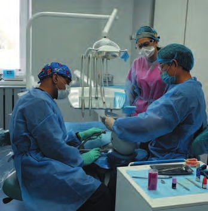
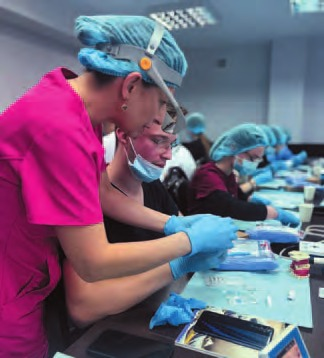
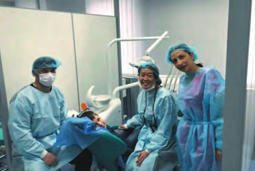
Міжнародне співробітництво дуже важливе для розвитку стоматології
– Я знаю про Ваші численні контакти з європейськими та американськими університетами… Чи можете розповісти про міжнародні проєкти, в яких Ви берете участь?
– Наш університет може пишатися тим, що ще 1999 року почав співпрацювати з Університетом Північної Кароліни (США), тепер він називається Університетом Адамса. І ось уже понад 25 років розвиваються ці дружні, плідні зв'язки між американськими викладачами і студентами та стоматологами нашого університету. Ця співпраця не лише в галузі стоматології, є цікаві проєкти також у галузях медицини, фармації. Наші студенти мають можливість побачити високі технології в США, викладачі – співпрацювати в галузі науки. Наші бібліотеки співпрацюють, це також дуже важливо.
Наприкінці травня цього року планується приїзд студентів і лікарів-стоматологів з Університету Адамса. Протягом двох тижнів вони братимуть участь у різних проєктах. Цього разу ми сконцентруємося на профілактиці, особливо у школах та сільській місцевості. І, природно, це буде не тільки навчання гігієні, не тільки лекції, у студентів з Америки буде можливість багато дізнатися про нашу країну, її мальовничі куточки.
Наш університет тісно співпрацює не лише з Університетом Адамса в США, а й з університетами європейських країн – Румунії, України, Польщі…
Період 2017–2022 років є важливим у діяльності кафедри та стоматологічного факультету завдяки реалізації проєкту «Співпраця у галузі освіти та досліджень у галузі патології ротової порожнини між Норвегією, Молдовою, Білоруссю та Вірменією».
Метою проєкту було навчання фахівців кафедри морфопатології з питань патології ротової порожнини та впровадження нових методів навчання на стоматологічному факультеті. У наукових заходах взяли участь Даніела Єлена Костя, професор Бергенського університету, координатор проєкту (Норвегія), я як координатор проєкту в Молдові та викладачі університету з Молдови – професор Ольга Тагадюк, директор PhD School, доценти Євген Мельник, Аурелія Спіней, Єлена Степко, Сергій Чобану, професор Марина Маркарян, доцент Ізабелла Варданян, викладачі Єреванського медичного університету (Вірменія), професор Наталія Шакавець, професор Тамара Терехова (Білорусь), доктор Тіне Мерете Соланд з Університету Осло (Норвегія).
Дві докторантки нашої кафедри брали участь в академічній мобільності в Норвегії, а потім захистили кандидатські дисертації під моїм керівництвом. Це Ірина Івасюк, тема «Оцінка захворювань слизової ротової порожнини у хворих із хронічними вірусними гепатитами В і С» (жовтень 2024 року) і Крістіна Поштару, тема «Проведення діагностики зубощелепних аномалій у дітей з неврологічними захворюваннями» (2021). Третя докторантка – Діана Тріфан, її тема – «Біологічні методи лікування глибокого карієсу постійних зубів» (вересень 2024 року).
У рамках проєкту проводилися семінари. Ректори Державного університету медицини та фармації імені Ніколає Тестеміцану Еміл Чебан та Іон Абабій наголосили на важливості співпраці преклінічних, клінічних та фундаментальних кафедр при реалізації проєктів такого масштабу. Таке міжнародне співробітництво дуже важливе для розвитку стоматології та інтеграції нашої країни до Євросоюзу, і незважаючи на ковід та різні інші обставини, ми завершили проєкт з великим успіхом!
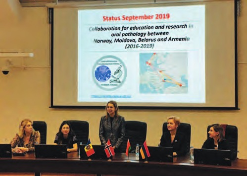
– Ви саме від Університету Північної Кароліни, Університету Адамса довідалися про діяльність Міжнародної колегії стоматологів (ICD)? Ось уже незабаром 15 років, як Ваші заслуги перед професією та суспільством визнані запрошенням до членства в Міжнародній колегії стоматологів, і нині Ви є віцерегентом по Молдові у Дистрикті 15 Європейської секції. Що дало Вам членство в ICD як стоматологу?
– Мені пощастило протягом 25 років співпрацювати з такими лікарями із Північної Кароліни, як доктори Маклер, Хорвіц, Крігсман, Зігел – вони і багато інших стоматологів із США розповідали про ICD. ICD – це благодійність і служіння професії!
Членство у Міжнародній колегії стоматологів – висока честь, і я стала Fellow ICD у 2011 році. Спілкуючись зі стоматологами з різних країн, ми можемо брати участь у різних проєктах, рухатися у правильному напрямку в різних галузях стоматології.
Я бачу, що інтерес стоматологів Молдови до Міжнародної колегії стоматологів зріс, і думаю, що ті з них, і молоді, і зі стажем, які досягли великих успіхів, будуть запрошені в ICD. Це дуже важливо для всієї спільноти стоматологів. Членство в ICD з Молдови мають доцент Дорін Істраті (2011 р.) і професор Валеріу Фала (2018 р.).
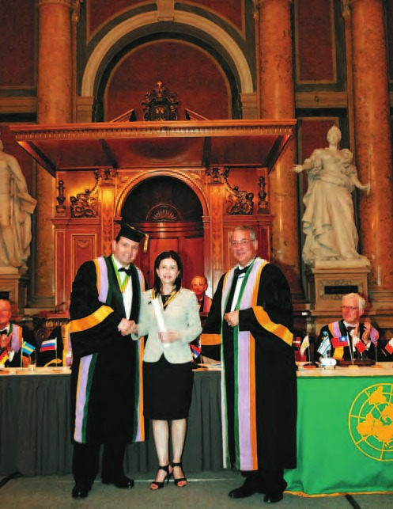
Реставраційна терапія у Молдові завдяки Призма-чемпіонату піднялася на дуже високий рівень
– Згадуючи Призма-чемпіонат, у 20-річній історії якого молдавські стоматологи брали активну участь: професор Валеріу Бурлаку був незмінним членом міжнародного журі, а Геннадіє Фала, Геннадіє Унгуряну та Олександр Фурник стали Призма-чемпіонами, хочу запитати, наскільки азартні стоматологи Молдови у своїй професійній діяльності?
– Це була чудова співпраця між стоматологами Молдови і України. Професор Валеріу Бурлаку – це жива легенда і наша історія, завідувач кафедри терапевтичної стоматології, він викладав реставраційну терапію зубів, ділився знаннями.
Призма-чемпіонат давав змогу спілкуватися стоматологам різних країн. Стоматологи, які прагнули підвищити свої знання, покращити навички, доводили це біля крісла пацієнта, працювали за технологіями, які на той час були актуальні. А багато протоколів, які з'явилися тоді, актуальні й сьогодні. І я вважаю, що реставраційна терапія у Молдові завдяки Призма-чемпіонату піднялася на дуже високий рівень.
Призма-чемпіонат у Молдові проходив на базі різних клінік. Слід віддати належне в організації Призма-чемпіонату Молдови професорам Валеріу Бурлаку – члену міжнародного журі та Валеріу Фала, завідувачу кафедри терапевтичної стоматології. Клініки «Фала-Дентал» із професором Валеріу Фала і клініка «UniDent Art» із доцентом Доріном Істраті проводили ці чемпіонати багато років.
Я була в журі Призма-чемпіонату Республіки Молдови і пам'ятаю, наскільки азартними були наші стоматологи, доводячи своє вміння в естетичній реставрації зубів.
Коли я в 1999–2000 роках уперше побувала в Навчальному центрі на базі клініки «Аполлонія», це дозволило мені зробити перші дуже важливі кроки у реставраційній стоматології, і я вдячна Вам, Сергію Володимировичу, бо те, чого Ви тоді нас навчили, актуальне і сьогодні – протоколи, мінімально інвазивний підхід, і це теж дало мені можливість розвиватися в потрібному напрямку…
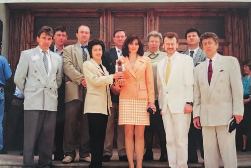
– Дякую на добрім слові! Завдяки нашій тривалій професійній співпраці мені доводилося часто бувати в Молдові, і я можу відзначити видиму мені неймовірну згуртованість університетських і практикуючих стоматологів… Зазвичай викладачі та практики перебувають немов на різних полюсах професії, а тут таке єднання! Це особливість молдавської стоматології чи результат безперервної післядипломної освіти?
– Я вважаю, і те, й інше. Наші вчителі нас навчили, що співпраця між практичними лікарями і професорами з університету – це дуже важливо. І всі бази удосконалення лікарів дуже тісно співпрацюють із практичними лікарями.
Я щаслива людина, тому що працювала на двох кафедрах з прекрасними колективами – на кафедрі терапевтичної стоматології (2000–2004) під керівництвом професора Георге Ніколау, він був моїм першим науковим керівником і завідувачем кафедри. Професор Соф'я Сирбу завідувала цією кафедрою до 1986 року – світла їм пам'ять! Другий колектив (2004–2015) – це кафедра дитячої стоматології під керівництвом професорів Павла Годорожі, Іона Лупану, моїх наукових консультантів для другої дисертації – світла їм пам'ять!
Хочу згадати наших деканів Арсенію Гуцана, Іларіона Постолакі, Соф'ю Сирбу, Павла Годорожу, Іона Лупану, Георге Ніколау, професорів Думитру Щербатюка, Валентина Топала, Георге Цибирне, Володимира Окушка, Іона Мунтяну – це ті люди, котрі навчили нас бути згуртованими, завжди пам'ятати, звідки ми починали і куди рухаємося – світла і їм пам'ять!
Традиції в університеті і на нашому факультеті дуже хороші – це єднання між викладачами і студентами, майбутніми практичними лікарями.
Практично щодня ми спілкуємося і консультуємося з колегами на факультеті – науково-педагогічними колективами кафедри терапевтичної стоматології післядипломної освіти, яку очолює професор Валеріу Фала, кафедри ортодонтії на чолі з доцентом Валентиною Тріфан, кафедри дитячої щелепно-лицевої хірургії і педодонтії на чолі з доцентом Сільвією Рейлян, кафедри одонтології, пародонтології і патології ротової порожнини, яку очолює доцент, декан Серджіу Чобану, кафедри ортопедичної стоматології «Іларіон Постолакі» – завідувач доцент Олег Соломон нині – декан стоматологічного факультету, кафедри щелепно-лицевої хірургії та оральної імплантології «Арсеній Гуцан» на чолі з професором Ніколає Келе…
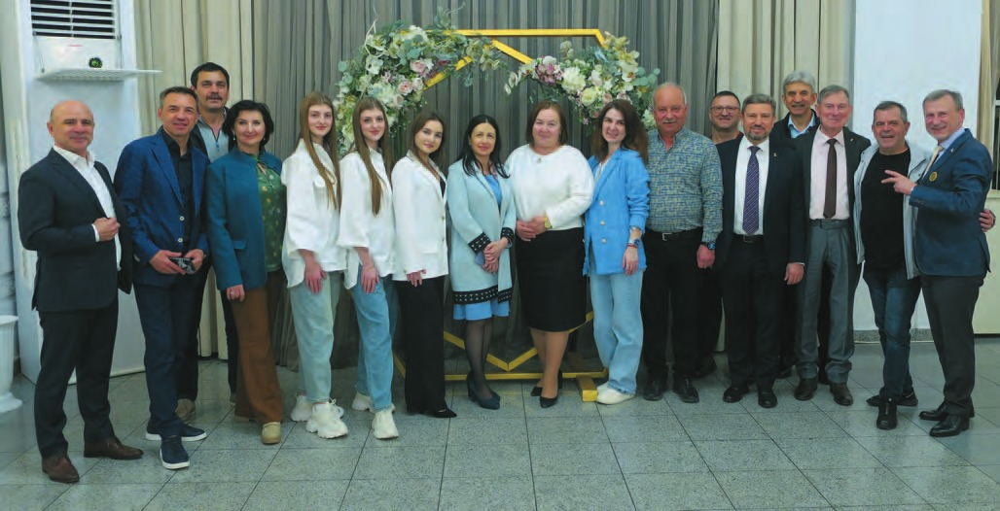
І почати новий день з усмішкою…
– Стоматологія – дуже важке і професійно небезпечне заняття, пов'язане з граничною напругою під час роботи, тому щоденний робочий час біля крісла раніше був обмежений 5,5 годинами… Нині обмежень робочого часу немає, що загрожує професійним вигоранням. Поділіться рецептом, як Ви уникаєте вигорання…
– Мій рецепт – хороші емоції і добрі, позитивні думки після робочого дня плюс родина, яка завжди допомагає. Це і позитивні люди, які оточують мене, і заняття спортом, насамперед плаванням. Прогулянки на свіжому повітрі… Це те, що допомагає мені налаштуватися на позитивний лад і почати новий день з усмішкою та впевненістю в тому, що я все зумію і подарую людям добро!
– Я знаю, що стоматологи Молдови створили навіть футзальну команду! Ви маєте стосунок до цього футбольного клубу?
– Я фанатка футзалу, і мене тішить, що наші стоматологи займаються цим видом спорту. До того ж це ще раз доводить нашу згуртованість. Спорт, фізична активність завжди зближують людей, і, природно, виплескуються емоції. Ми, уболівальники, можемо покричати, і це також допомагає зняти напругу після робочого тижня. Я знаю, що і Геннадіє Унгуряну, і Валеріу Фала, і багато інших наших стоматологів беруть участь в організації матчів нашої команди із футзалу.
– Ви сказали, що родина допомагає Вам боротися з вигоранням, але з усіма цими університетськими проєктами, громадською активністю, викладацькою роботою скільки часу залишається на сім'ю?
– Я завжди знаходила час для моєї родини, і мені пощастило, що ми всі допомагаємо одне одному. Сім'я у нас лікарська, мій чоловік Андрій Ункуца – лікар-невропатолог, він завжди розумів мене, а я – його, коли він мав або нічні чергування, або дуже інтенсивну адміністративну роботу. Він зараз директор клінічної республіканської лікарні «Тимофій Мошняга». Завжди працював дуже багато, прагнув досягти досконалості у своїй професії, його життя – приклад того, що тільки за старанної роботи можна досягти високих результатів у будь-якій професії.
Допомагають мені й діти. Ми знаходимо баланс між роботою та сім'єю. У нас це виходить!
Нашому синові Віктору 27 років, він закінчив факультет економіки і бізнесу (Клуж, Румунія) і нині займається своїми індивідуальними проєктами, мешкає у Молдові. Крім рідної мови, володіє англійською, німецькою, французькою, це дуже допомагає йому в роботі.
Донька Андрея, їй 18 років, дуже добре навчається у ліцеї. Захоплюється хіп-хопом, бере участь у різних конкурсах, і їхня команда цього року посіла перше місце у республіканському конкурсі в Молдові. Вона дуже старанна, і ми сподіваємося, що стане лікарем, а спеціалізацію обере сама. Попереду у неї активне літо – вступні іспити до медуніверситету. Я гадаю, що все буде добре, адже Андрея вчиться старанно.
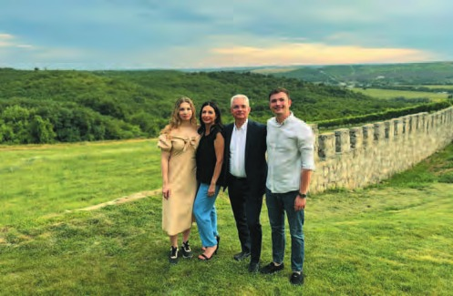
– Бажаємо їй успіху!.. Кожен викладач, учений створює своє продовження в учнях, колегах, дітях… Яке продовження створюєте Ви?
– Колектив нашого факультету і нашої кафедри дуже хороший, і я бачу це продовження в людях, які працюють щодня зі мною: вони ставляться до своїх обов'язків із відповідальністю. І мені приємно, що молоде покоління викладачів талановите, є кому залишатися після нас.
Мені завжди приємно перебувати поряд зі студентами, бо з ними завжди почуваєшся молодою.
– І традиційні побажання читачам журналу «ДентАрт», особливо напередодні Міжнародного дня стоматологів…
– Хочу всім побажати здоров'я, доброжитку, успіхів! Наш університет співпрацює також з українськими університетами Києва, Харкова, Полтави, і ми дуже сподіваємося, що війна, в яку ввергли Україну, скоро закінчиться, і ми зможемо більше спілкуватися не лише онлайн.
Особлива подяка клініці-студії «Аполлонія» та журналу «ДентАрт», якому цього року виповниться 30 років. Дай Боже, щоб це видання ще багато-багато років радувало всіх нас цікавими публікаціями!
Я присвячую це інтерв'ю науково-педагогічному колективу стоматологічного факультету Університету медицини та фармації імені Ніколає Тестеміцану!
– Дякую за інтерв'ю і добрі побажання! До нових зустрічей і в Молдові, і в Україні!
Розмовляв Сергій Радлінський